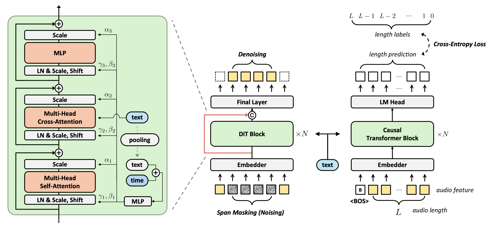
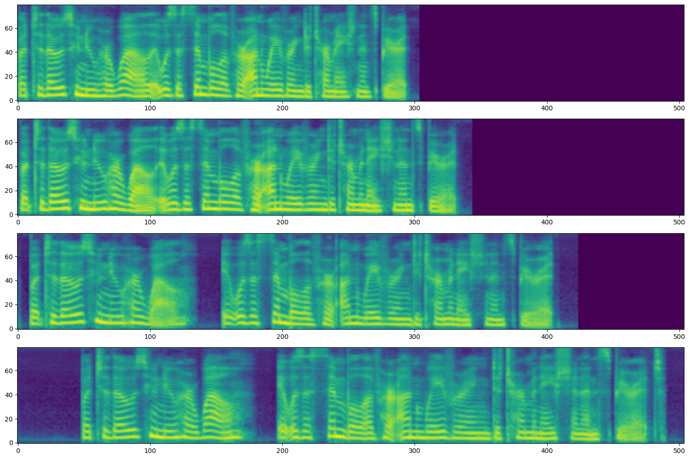

Abstract. Diffusion models have demonstrated remarkable success in images, videos, and audio generation. However, applying these models to text-to-speech (TTS) poses challenges due to the need for precise synchronization between text and generated speech. This work presents a latent diffusion model specifically tailored for TTS, integrating pre-trained text and speech encoders without relying on domain-specific modeling. One key feature of this approach is a module that predicts the total length of the generated speech from the given text. Our model leverages the Diffusion Transformer (DiT) and undergoes a network architecture ablation to optimize it for TTS applications. We scale the training dataset to 82K hours and the model size to 790M parameters. Our experiments show that the proposed model yields performance that is superior or comparable to state-of-the-art TTS models in terms of naturalness, intelligibility, and speaker similarity. Additionally, our model exhibits robust scalability with increasing data and model size.
Model Overview

The overview of DiTTo-TTS architecture. The leftmost image shows the inner structure of the DiT block, where we incorporate multi-head cross-attention with AdaLN. The middle image represents the LDM backbone which is trained to denoise by using noisy and contextual data, employing span masking. The rightmost image is the speech length predictor based on causal transformer blocks. Both DiT blocks and the speech length predictor employ cross-attention to condition on text representations from a text encoder. Additionally, DiT blocks utilize AdaLN with the aggregated text embedding. '+' denotes addition, and 'c' represents concatenation. The red line indicates a long skip connection between the states before and after the DiT blocks.
Zero-Shot TTS (LibriSpeech)
Through in-context learning, DiTTo-TTS produces speech using a reference audio and its corresponding text. We represent the prompt in blue, and the generated audio in green. The resulting speech closely resembles the reference in voice, background noise, and speaking style. When dividing prompts into 3-second segments, the audio boundaries may not always end in silence and could sometimes cut off words midway. For further details, please see English-only Evaluation part in Section 5.1 of our paper. When you click on "Show baselines", you can see the ground truth and baseline audio, etc. YourTTS, Vall-E, and CLaM-TTS audios are brought from YourTTS demo1, Vall-E demo2, and CLaM-TTS demo3 respectively.
Zero-Shot TTS (Multilingual LibriSpeech)
We represent the prompt in blue, and the generated audio in green. The resulting speech closely resembles the reference in voice, background noise, and speaking style. When dividing prompts into 3-second segments, the audio boundaries may not always end in silence and could sometimes cut off words midway. For further details, please see Multilingual Evaluation part in Section 5.1 of our paper. When you click on "Show baselines", you can see the ground truth and baseline audio, etc. CLaM-TTS audios are brought from CLaM-TTS demo1
Celebrities
DiTTo-TTS is capable of replicating the voices and speech styles of well-known personalities. We represent the prompt in blue, and the generated audio in green. The resulting speech closely resembles the reference in voice, background noise, and speaking style. When you click on "Show baselines", you can see the ground truth and baseline audio, etc. Texts corresponding to the generated audio and CLaM-TTS audios are brought from CLaM-TTS demo1
Anime Characters
DiTTo-TTS is capable of replicating the voices and speech styles of well-known anime characters. We represent the prompt in blue, and the generated audio in green. The resulting speech closely resembles the reference in voice, background noise, and speaking style. When you click on "Show baselines", you can see the ground truth and baseline audio, etc. Texts corresponding to the generated audio and Mega-TTS 2 audios are brought from Mega-TTS 2 demo1
Robustness
CLaM-TTS can produce robust speech, evidenced by its low WER. Samples are taken from the Mega-TTS demo1.
| Text | Mega-TTS | CLaM-TTS |
|---|---|---|
| Thursday, via a joint press release and Microsoft speech Blog, we will announce Microsoft’s continued partnership with Shell leveraging cloud, speech, and collaboration technology to drive industry innovation and transformation. | ||
| The great Greek grape growers grow great Greek grapes one one one. |
Speech Diversity
CLaM-TTS can synthesize speech with diverse prosody and timbre from various speakers when generated without a prompt. First four text samples are brought from Vall-E demo1, and the last three are from Gigaspeech test set.
| Text | Sample #1 | Sample #2 | Sample #3 | Sample #4 | Sample #5 |
|---|---|---|---|---|---|
| Because we do not need it. | |||||
| I must do something about it. | |||||
| He has not been named. | |||||
| Number ten, fresh nelly is waiting on you, good night husband. | |||||
| so it’s really for us. it’s kind of like the ah political, social headquarters or center for our community. | |||||
| provided it’s evidence evidence-based and rigorous but, also, i believe, fair. | |||||
| now you you've been with the office in Northern Ireland for ten years. |
Speech Rate Controllability
DiTTo-TTS can synthesize the same text into audio of varying lengths. This variable-length modeling allows for speech rate control by adjusting the total duration of the generated speech, as shown in the following mel-spectrogram. The speech rate decreases from top to bottom. For more details, refer to Section 6.1 of our paper.

| Text | Length of Latent Audio | Sample |
|---|---|---|
| But to those who knew her well, it was a symbol of her unwavering determination and spirit. |
38 | |
| 43 | ||
| 53 | ||
| 63 |
Comparison with LibriSpeech Zero-Shot Demo Cases
Our samples have been downsampled to 16kHz for comparison.
Demos for each model can be found at their respective links:
Mega-TTS,
NaturalSpeech2,
VALL-E
| Text | Prompt | Ground Truth | Mega-TTS | NaturalSpeech 2 | VALL-E | CLaM-TTS |
|---|---|---|---|---|---|---|
| They moved thereafter cautiously about the hut groping before and about them to find something to show that Warrenton had fulfilled his mission. | — | — | ||||
| And lay me down in thy cold bed and leave my shining lot. | — | |||||
| Number ten, fresh nelly is waiting on you, good night husband. | — | — | ||||
| Yea, his honourable worship is within, but he hath a godly minister or two with him, and likewise a leech. | ||||||
| Instead of shoes, the old man wore boots with turnover tops, and his blue coat had wide cuffs of gold braid. | — | |||||
| The army found the people in poverty and left them in comparative wealth. | ||||||
| Thus did this humane and right minded father comfort his unhappy daughter, and her mother embracing her again, did all she could to soothe her feelings. | — | |||||
| He was in deep converse with the clerk and entered the hall holding him by the arm. | — | |||||
| Indeed, there were only one or two strangers who could be admitted among the sisters without producing the same result. | — | — | ||||
| For if he's anywhere on the farm, we can send for him in a minute. | — | — | ||||
| Their piety would be like their names, like their faces, like their clothes, and it was idle for him to tell himself that their humble and contrite hearts it might be paid a far-richer tribute of devotion than his had ever been. A gift tenfold more acceptable than his elaborate adoration. | — | — | ||||
| The air and the earth are curiously mated and intermingled as if the one were the breath of the other. | — | — | ||||
| I had always known him to be restless in his manner, but on this particular occasion he was in such a state of uncontrollable agitation that it was clear something very unusual had occurred. | — | — | ||||
| His death in this conjuncture was a public misfortune. | — | — | ||||
| It is this that is of interest to theory of knowledge. | — | — | ||||
| For a few miles, she followed the line hitherto presumably occupied by the coast of Algeria, but no land appeared to the south. | — | — |